Før vi starter
Nodes, igen
Samme ide som i Color: et flowdiagram, hvor billedet løber gennem en kæde af nodes fra venstre mod højre. Der findes over 300 forskellige nodes i Fusion, men langt de fleste er en af fire slags:
- Image. Et udgangspunkt: en baggrund, en tekst, jeres rå klip.
- Effect. Ændrer et billede, der løber igennem: en glød, en sløring, en farvekorrektion.
- Merge. Lægger et billede oven på et andet.
- Mask. Bestemmer hvor en effekt eller en merge skal virke, og hvor den ikke skal.
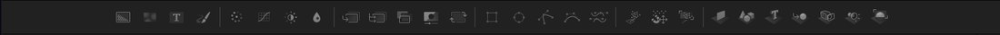
Jeg kan ikke finde den node, jeg leder efter
Dobbeltklik i et tomt område af node-graf'en, og skriv navnet på det, I leder efter. Fusion foreslår alt, der matcher, uden at I skal vide præcis hvor det ligger i værktøjslinjen.
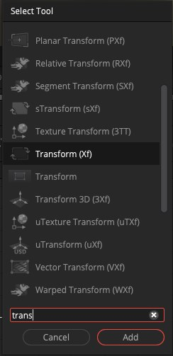
Første del
Byg en titel
Sådan langt kan det gå, når man bliver ved med at føje nodes til:
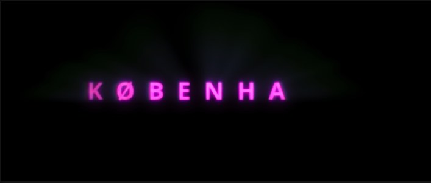
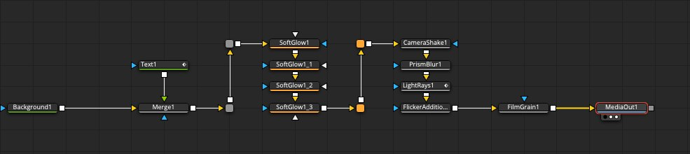
I bygger kernen, ikke hele kæden.
-
Lav en baggrund og en tekst
Dobbeltklik i node-graf'en, og tilføj en Background- node og en Text+-node. Skriv jeres tekst i Text- nodens Inspector, og vælg font, farve og størrelse.
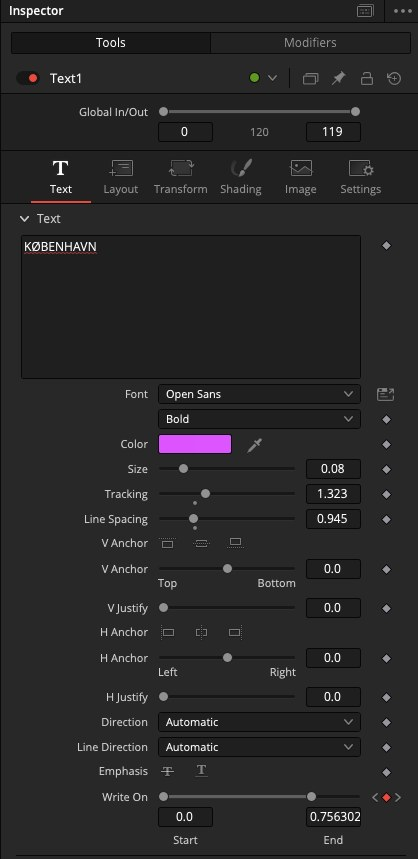
Write On nederst lader teksten skrive sig selv frem over tid, hvis I vil gå et skridt videre. -
Læg teksten oven på baggrunden
Tilføj en Merge-node. Forbind Background til dens baggrund-indgang, og Text til dens forgrund-indgang. Forbind Merge til MediaOut, og se titlen i vieweren.
Anden del
Byg en custom transition
En overgang, I selv har bygget med en maske, i stedet for at vælge en fra listen i Edit. Vi bruger et klip fra Hund på efterårstur, hvor Perle løber med en pind.
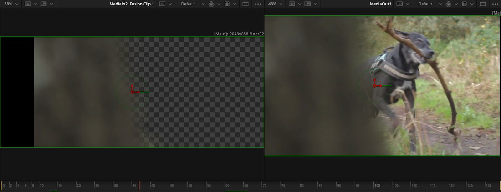
-
Tegn en maske rundt om motivet
Vælg Polygon i værktøjslinjen, og klik jer rundt om hunden i vieweren, punkt for punkt. Luk formen ved at klikke tilbage på det første punkt.
-
Forbind masken til en Merge
Tilføj en Merge-node. Forbind det første klip til baggrunden, det næste klip til forgrunden, og polygon-masken til Mergens maske-indgang forneden.
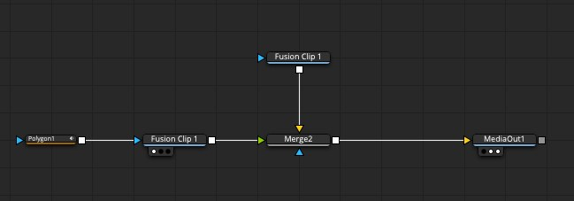
-
Animer overgangen
I Mergens Inspector kan I keyframe Center eller Size over tid, så masken vokser eller flytter sig hen over billedet, i stedet for at stå stille. Samme keyframe- princip som opacity i Edit L3.
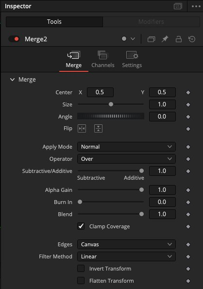
Tredje del
En avanceret effekt
Ren demo, I skal ikke bygge denTil sidst et kig på, hvor langt Fusion kan gå: en sporet HUD-effekt på et ansigt, bygget af flere navngivne grupper af nodes.
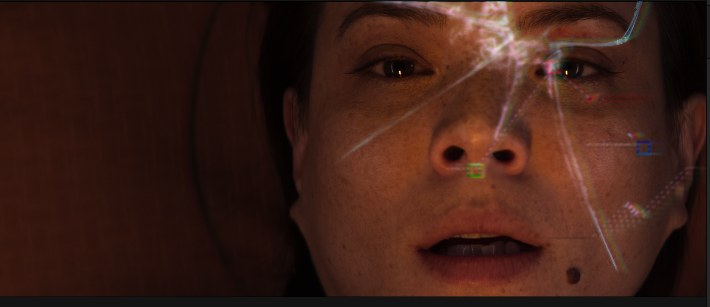
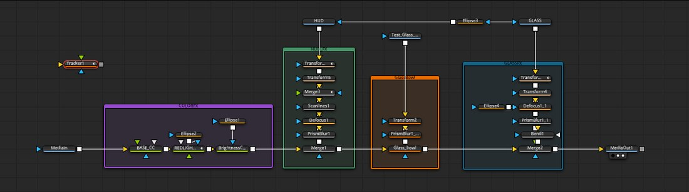
Fjerde del
Green screen
Valgfri, ikke en del af dagens 40 minutterVi når det ikke på selve dagen, men det ligger her, hvis I vil videre på egen hånd. At fjerne en grøn baggrund og sætte noget andet ind i stedet.
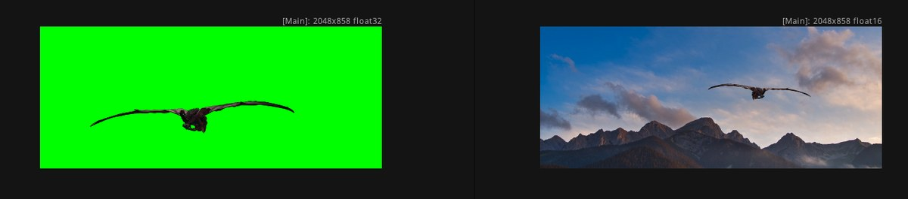
-
Tilføj en Delta Keyer
Find Delta Keyer i værktøjslinjen, og forbind klippet med den grønne baggrund til den. Delta Keyer fjerner den valgte farve og gør den gennemsigtig i stedet.
-
Rens kanten op
Rå nøgling efterlader ofte en grøn kant eller støj. En Defocus- og en farvekorrektions-node lige efter Delta Keyer blødgør kanten, så den ser mere naturlig ud.
-
Læg den nye baggrund ind
Tilføj en Merge-node. Jeres nye baggrund er Mergens baggrund, og den nøglede optagelse (den, der kommer ud af Delta Keyer) er dens forgrund. Brug Transform og MatchTint til at få størrelse og farve til at passe sammen.
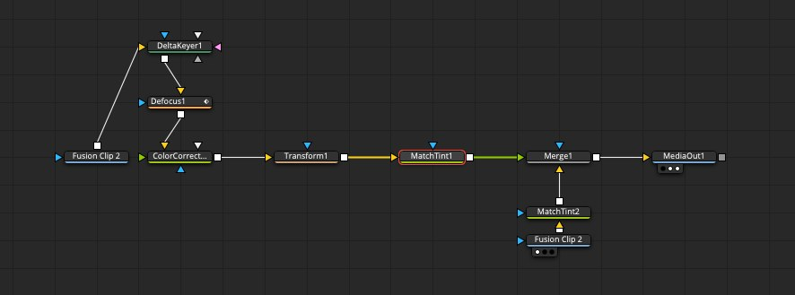